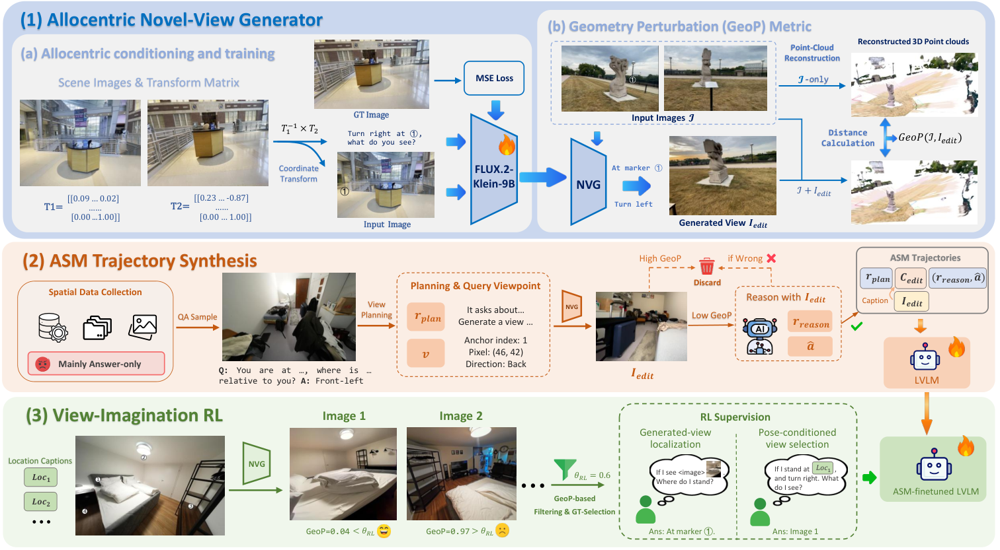

Paper Analysis
01 · What Is Being Internalized?
跨视角问题往往需要先确定“从哪里观察更容易判断”，再推断该视点下的布局。论文把这两个步骤分别叫 view planning 和 view imagination，合称 Active Spatial Mentalization。这里的 internalize 指用训练让 VLM 学会输出这种推理过程，不是往网络里新增一个可检索的三维地图模块。
以往一种方案是在测试时让模型请求额外视图，运行生成器后再回答。SpatialASM 把昂贵的生成主要移到数据构造阶段：输入原始场景图像与问题，训练后的 VLM 直接生成视点计划、想象视图的文字描述和答案。它不需要在默认测试路径上调用 NVG。
因此必须区分“文字中描述出合理空间关系”和“内部存在真实几何模型”。本文直接测量的是问答准确率，不能从流畅的推理轨迹推定几何准确性、逐 token 的真实推理机制或历史记忆容量。
Paper Analysis
02 · Reading the Three Rows of the Original Figure

Yuhong Liu et al. · Original figure, unmodified · CC BY 4.0 · Paper & Caption ↗
Figure 3 第一行先训练新视角生成器：输入同一场景的一到四张图，选择锚点图，在图上标出目标观察位置，并用文字指定朝向。FLUX.2-klein-9B 经微调后输出新视图。监督来自 DL3DV 中真实相机位姿对应的目标图，而不是仅凭语言模型凭空判定生成结果。
目标视点写为 v=(i,x,y,d)：i 指定锚点图，x、y 是该图上的像素位置，d 是朝向。这个接口避免多步相机动作 rollout，但像素位置本身不完整指定公制三维坐标；它依赖图像上下文和训练数据约束，并不是通用精确 6DoF 渲染接口。
第二行构造 SFT 轨迹：先筛出原模型答错的问题，再让它计划视点，生成新观察，重新推理。只有结果转为正确且生成图通过 GeoP 过滤才保留。最后把生成图替换成描述布局的 caption，形成从原图到“计划—想象描述—推理—答案”的监督。
第三行构造 RL 选择题：在给定位置和朝向的条件下匹配生成图，或反过来判断生成图对应哪个位置。生成图在这一阶段仍然出现在训练题里；“不把生成图给模型”仅适用于最终 SFT 轨迹替换和默认部署输入，不适用于全部训练阶段。
v = (anchor image i, pixel x, pixel y, direction d) I_edit = G(I_1,...,I_n; v) SFT target: [view plan, imagined-view captions, reasoning, answer] Default inference input: original images + question
Paper Analysis
03 · GeoP Is a Consistency Proxy
GeoP 的计算先用 MapAnything 对原始输入重建点云 M_orig，再把一张生成图加入输入，重新重建得到 M_aug。若新观察迫使原模型大幅改变场景几何，两个点集的距离会变大。论文用双向、平方最近邻距离的均值之和，即 Chamfer distance，作为过滤分数。
符号含义很直接：每个原点找增强点集里最近的点，反向再做一次。作者假定两次输出可放在同一世界坐标系比较。复现时仍需要核对坐标原点、尺度与点采样是否一致，因为这些变化也会进入距离，不一定来自生成图错误。
较低 GeoP 表示重建模型对新增视图的响应较小，不等于新图内容是真实的。若新视图合理揭示原图未覆盖的区域，点集本来就可能变化；若重建器忽略错误图，也可能得到偏低分数。附录因此对朝后视图使用更宽的 RL 阈值 1.2，其他朝向为 0.6，SFT 阈值为 2.5。
这一限制也体现在实验：Qwen3.5-35BA3B 的外部 ASM 中，SVC 的 GeoP 中位数 0.087 低于 SpatialASM-NVG 的 0.118，但 Among 准确率分别为 48.5 和 55.5。几何代理分数较好，不自动意味着对问题更有用。
M_orig = F(I); M_aug = F(I union {I_edit})
GeoP = mean_(p in M_orig) min_(q in M_aug) ||p-q||²
+ mean_(q in M_aug) min_(p in M_orig) ||q-p||²
F: MapAnything; lower means less reconstruction perturbation.Paper Analysis
04 · How the Supervision Reaches the VLM
SFT 数据的关键准入条件是：原图回答 a0 不等于已知答案 a，加入生成图后的回答 a1 等于 a，且每张生成图的 GeoP 都低于阈值。它选的是在该次构造过程中辅助视图与答案改善同时出现的样本；这不是严格的随机因果实验，也不能保证每段中间描述都正确。
生成视图经 captioning 模型变成文字后，目标 VLM 只看原图与问题，学习产生整条轨迹。SFT 梯度更新 VLM 参数，并不通过 caption、离散筛选或 MapAnything 反向训练生成器。生成器有自己先前的图像监督训练，两个阶段不能画成一条端到端可微链。
完整轨迹库 128,354 条来自 Holi-Spatial、VST-500k 和 MindCube-train；实际训练使用 HoliSpatial 来源的 66k 子集，不能把完整 128k 的组成直接当作主实验训练集。原始答案来自既有 QA 数据，因此这个阶段不是完全无标签自监督。
RL 使用 58,346 条题目，含生成视图定位和按位姿选择视图两种互逆任务。选项标签由生成条件给出，正确候选还需通过 GeoP。GRPO 每组采样五个回答，reward 为 0.9×答案正确加 0.1×格式正确，KL 权重 0.01；它奖励的是可核验选项和格式，不直接监督三维 memory。
SFT 训练十轮，学习率 5×10⁻⁶；RL 训练 300 步，batch 128，学习率 10⁻⁶。4B、8B 全量微调，30B-A3B、9B 用 rank 32 LoRA。生成器单独用 rank 512 LoRA 训练三轮。
Keep trajectory iff: a0 != a AND a1 == a AND max_k GeoP_k < theta R = 0.9 * correctness + 0.1 * format SFT/RL gradients update the VLM; data filtering is outside that graph.
Paper Analysis
05 · The Most Informative Evidence
主表在七个空间基准和三个一般 VQA 基准评测。ESI 使用 passive-single 条件，Spatial457 只评六维子任务；模型在空间任务先输出推理，一般 VQA 则直接答题。下面是同骨干前后对照，单位为准确率百分点。
四种骨干的空间均分都提高，但并非每个任务都提高：9B 在 3DSR 从 64.4 降到 63.5。一般 VQA 的均分变化控制在 ±0.6，并不代表每个单项都无退化，例如 8B 的 RealWorldQA 从 73.2 降到 71.8。
四项子集上的 4B 消融中，基线均分 46.5，过滤后 SFT 49.9，过滤后 RL 48.8，两阶段 50.6。未过滤 SFT 为 48.4，但附录定义是省略整套轨迹过滤，不只是 GeoP，因此不能将 1.5 点全部归因于几何过滤；RL 的对应对照才主要围绕 GeoP 答案筛选。
外部生成并非总有帮助：8B 在 MindCube Around 从直接回答 52.0 下降到外部 ASM 的 45.5；内部训练后直接答为 58.0，再加外部 ASM 为 61.5。这说明学会使用辅助证据和获得辅助证据是两个不同问题。
| Backbone | Spatial Before | Spatial After | General Before | General After |
|---|---|---|---|---|
| Qwen3-VL-4B | 43.8 | 47.3 | 63.7 | 63.1 |
| Qwen3-VL-8B | 46.2 | 49.1 | 64.4 | 65.0 |
| Qwen3-VL-30B-A3B | 44.7 | 47.2 | 69.4 | 68.9 |
| Qwen3.5-9B | 51.1 | 52.3 | 78.1 | 78.5 |
Paper Analysis
06 · Costs, Release Status, and Transfer
默认测试没有新视角生成成本，但文字推理并非零开销。Table 2 的 Among 上，8B baseline 推理 12.6 秒，内部训练后 18.6 秒；Around 则为 7.5 和 7.2 秒。外部 ASM 所报 38–58 秒主要是 NVG 时间，不应与完整系统端到端延迟混为一谈。
官方仓库已提供模型与数据链接、NVG 训练和推理入口、VLMEvalKit 评估说明，但 VLM 训练代码与 ESI-passive 评估仍标注待发布。本次核对了文档，没有运行训练。仓库新闻里的年份存在不一致，因此首次公开日期以 arXiv 提交记录的 2026-10-09 为准。
对语义写入 memory 的研究，这篇更有价值的启发是“训练教师该提供什么”：除了类别向量，还可提供某个视角下应保留哪些空间关系，以及哪些额外观察对任务有用。要将其变成流式重建方法，仍需把监督对齐到视觉 token 或历史状态，并用未来帧几何 loss 与同容量对照验证；本文本身没有完成这一步。
生成视图在未观察区域会依赖先验，附录明确允许合理的未见内容。因此把生成图直接作为真实三维观测写入地图尤其需要谨慎；用它作为训练监督的候选来源，与把它当测量证据，是不同的技术选择。
Discussion
Reading Questions
Does inference generate additional images?
默认路径不生成，输入原图与问题后输出文字推理和答案；论文另外测试了与外部 NVG 结合的可选设置。
Is GeoP a ground-truth geometry metric?
不是。它衡量加入生成图对 MapAnything 重建的扰动，依赖该模型及坐标、尺度和采样约定。
Where do the gradients go?
生成器先单独训练；数据构造与过滤后，SFT/GRPO 更新 VLM。没有跨 caption 和离散筛选的联合重建梯度。
What does the filtering ablation isolate?
RL 对照主要移除 GeoP 筛选；SFT 对照移除整个轨迹过滤，不能单独归因于 GeoP。
References
Original Figure 3 is reproduced without modification under CC BY 4.0. First submitted and read version: October 9, 2026, v1. The paper-figure license is separate from the code, dataset, and model licenses. Repository documentation was checked; training and benchmarks were not reproduced.
Verified on 2026-10-25. Paper results refer to the linked versions. Repository references were checked on this date.